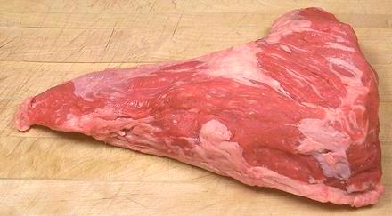

Tri-Tip Roast / Steak

[#185D, #1185C/D (steaks), Santa Maria Steak, Newport Steak, Triangle
Steak, Culotte (not quite correct)]
This is an elongated, triangular cut from the bottom of the Sirloin
adjacent to the Flank and Round. The Tri-Tip steak is cut crosswise
from this section.
This cut is very popular all along the West Coast, centering in
Santa Maria, 170 miles north of Los Angeles, but is not well known
in most of the country. In New York, Florence Prime Meats has
popularized this cut under the name "Newport Steak", named for the
triangular logo on a pack of Newport cigarettes.
Supply is limited because there are only two of these per beast.
The photo specimen was a Tri-Tip Roast, untrimmed (#185C). Untrimmed
means the membrane and fat (on the back side in photo) have not been
removed. This one measured 12 inches long, 7 inches wide at the big end
and 2 inches thick at the thickest point, and weighing 2 pounds 3 ounces
after fat and membrane were removed
More on Cuts of Beef.
Prep:
If this cut is purchased "untrimmed", there
is a membrane covering one side (the outside side as part of the
beast) with a layer of fat over it. This should be removed before
cooking. The NAMP guide shows #1185C and $1185D cut about 3/4 inch thick
across the grain as steaks before cooking, but that isn't much done
around here.
Cooking:
Here in California this cut is generally
given a flavorful rub, then grilled whole over very high heat so it's
almost charred on the outside and still rare on the inside. It is then
sliced about 1/4 inch thick.
ab_tritipz 131101 - www.clovegarden.com
©Andrew Grygus - agryg@clovegarden.com - Photos
on this page not otherwise credited © cg1
- Linking to and non-commercial use of this page permitted